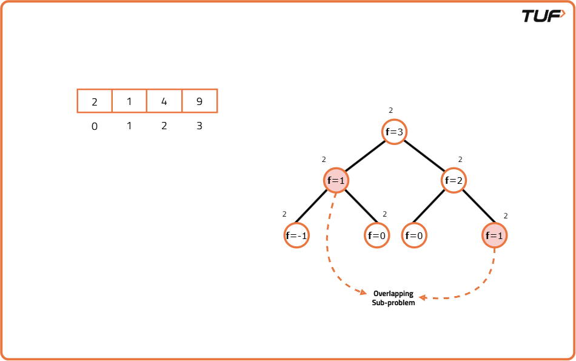
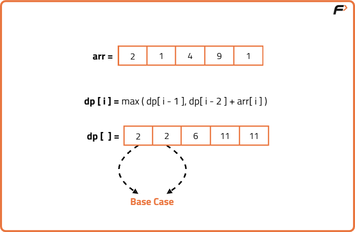

Maximum sum of non-adjacent elements (DP 5)
Problem Statement: Given an array of N positive integers, we need to return the maximum sum of the subsequence such that no two elements of the subsequence are adjacent elements in the array.
Note: A subsequence of an array is a list with elements of the array where some elements are deleted (or not deleted at all) and the elements should be in the same order in the subsequence as in the array.
Examples
Input: nums = [1, 2, 4]
Output: 5
Explanation:
Subsequence {1,4} gives maximum sum.
Input: [2, 1, 4, 9]
Output: 11
Explanation:
Subsequence {2,9} gives maximum sum
Disclaimer: Here is the practice link to help you assess your knowledge better. It's highly recommend trying to solve it before looking at the solution.
Memoization
Algorithm
As we need to find the sum of subsequences, one approach that comes to our mind is to generate all subsequences and pick the one with the maximum sum.
To generate all the subsequences, we can use the pick/non-pick technique. This technique can be briefly explained as follows:
We can construct the recursive relation as follows:
To generate all the subsequences, we can use the pick/non-pick technique. This technique can be briefly explained as follows:
- At every index of the array, we have two options.
- First, to pick the array element at that index and consider it in our subsequence.
- Second, to leave the array element at that index and not to consider it in our subsequence.
We can construct the recursive relation as follows:
- At any index, pick the current element but then skip the next one
- Or you can skip the current element and try from the next one

Code
#include <bits/stdc++.h>
using namespace std;
class Solution {
public:
// Recursive function with memoization
int solve(vector<int>& arr, int i, vector<int>& dp) {
// If index is negative, no element to pick
if (i < 0) return 0;
// If at first element, return its value
if (i == 0) return arr[0];
// Return already computed value
if (dp[i] != -1) return dp[i];
// Include current and move 2 back
int pick = arr[i] + solve(arr, i - 2, dp);
// Exclude current and move 1 back
int notPick = solve(arr, i - 1, dp);
// Store and return max of both choices
return dp[i] = max(pick, notPick);
}
// Main function to be called externally
int maximumNonAdjacentSum(vector<int>& arr) {
int n = arr.size();
// DP array initialized with -1
vector<int> dp(n, -1);
// Start solving from last index
return solve(arr, n - 1, dp);
}
};
int main() {
vector<int> arr = {2, 1, 4, 9};
Solution obj;
// Output the result
cout << obj.maximumNonAdjacentSum(arr);
return 0;
}
Complexity Analysis
Time Complexity: O(N), where N = total no. of elements in array. The overlapping subproblems will return the answer in constant time O(1).Space Complexity: O(N+N), extra space used for memoization and auxiliary stack space.
Tabulation
Algorithm
To prevent auxiliary stack space used by recursion in memoization, and to optimize space and runtime, we use the tabulation (bottom-up DP) approach.
- Create a DP array to store the maximum sum at each index.
- Initialize the first value in the DP array as the first element of the input array because if there's only one element, that’s the only sum we can take.
- For the second element, take the maximum between the first and the second element.
- From the third element onward, for each index, calculate two options:
- If we pick the current element, we add its value to the value at index two positions back in the DP array
- If we don’t pick, just take the value from the previous index.
- Take the maximum of the two options and store it in the current position in the DP array.
- After processing all elements, the last value in the DP array will contain the maximum sum possible without picking adjacent elements.

Code
#include <bits/stdc++.h>
using namespace std;
class Solution {
public:
// Function to return maximum sum of non-adjacent elements
int maximumNonAdjacentSum(vector<int>& arr) {
// Get the size of array
int n = arr.size();
// If array has only one element, return it
if (n == 1) return arr[0];
// Initialize dp array of size n
vector<int> dp(n);
// Base case: only one element
dp[0] = arr[0];
// Base case: max of first or second element
dp[1] = max(arr[0], arr[1]);
// Iterate from 3rd element onwards
for (int i = 2; i < n; i++) {
// Either take current and add dp[i-2]
// Or skip current and take dp[i-1]
dp[i] = max(arr[i] + dp[i - 2], dp[i - 1]);
}
// Final result at last index
return dp[n - 1];
}
};
int main() {
vector<int> arr = {2, 1, 4, 9};
Solution obj;
cout << obj.maximumNonAdjacentSum(arr);
return 0;
}
Complexity Analysis
Time Complexity: O(N), every element of array is processed once.Space Complexity: O(N), extra space used to store DP array.
Space Optimization
Algorithm
In the tabulation approach, we stored the best possible answer up to every index in an array. But if we look closely, to compute the value at any position, we only need the answers from the previous two positions and not the entire array. Therefore, instead of storing the entire array, we can just keep track of the best possible sum at previous index and one before that. For every index:
- If we include the current element, we add it to the best sum from two positions back.
- If we don’t include it, we just take the last best sum from the previous position.
- Then we update our tracking values to reflect the new best sum for the previous two positions.
Code
#include <bits/stdc++.h>
using namespace std;
class Solution {
public:
// Function to return maximum sum of non-adjacent elements
int maxSum(vector<int>& nums) {
// Handle edge case for empty input
if (nums.empty()) return 0;
// Initialize two tracking sums
int prev2 = 0;
int prev = nums[0];
// Traverse through the array
for (int i = 1; i < nums.size(); i++) {
// Include current by adding it to two steps back
int include = nums[i] + prev2;
// Exclude current by taking previous best
int exclude = prev;
// Choose max of include and exclude
int curr = max(include, exclude);
// Update tracking variables
prev2 = prev;
prev = curr;
}
// Final result is stored in prev
return prev;
}
};
int main() {
vector<int> arr = {3, 2, 5, 10, 7};
Solution obj;
cout << obj.maxSum(arr) << endl;
return 0;
}
Complexity Analysis
Time Complexity: O(N), every element of array is processed once.Space Complexity: O(1) , only constant variables are used.